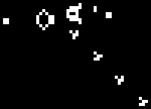
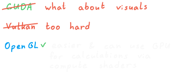
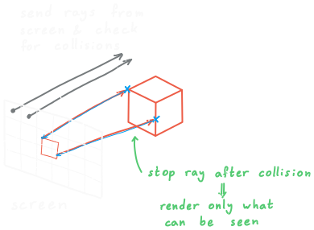

00_ABSTRACT
This project is a high-performance, real-time 3D simulation of COnway's Game of life built from scratch in C++ and OpenGL. It leverages GPU Compute Shaders for parallel cell state evaluation and translates discrete voxel spaces into continuous 3D environments using an optimized screen-space Raymarching renderer.
01_INTRODUCTION
Every programmer has heard of John Conway's famous Game of Life. With such a grand name, a normal person would expect the game to be something like The Sims, but in reality it is a simple zero-player game.
The first of the two main components are a bunch of "cells" that are ordered in a grid. These cells are just squares with colors indicating whether they are dead or alive. The second component are a bunch of rules, which determine if a cell lives or gets born depending in the cells around it.
Given these components, all that's left is an initial state of the cells in the grid world, everything else is up to the cells and rules.

In the classic case, the grid is 2-D and each cell considers its 8 neighbors. This gives us a light simulation that is easy to visualize. However, as a good introductory project, it is kinda clichéd. The fix is simple, we just introduce a 3rd dimension.
02_THE_3D_CHALLENGE
A 3rd dimension introduces some problems:
- Now we have $n^3$ cells instead of just $n^2$, so performance is of utmost importance if we want a real-time game.
- We move from the quiet life in the suburbs to a high-density building with 26 neighbors instead of 8.
- How can we visualize the 3D world on a flat screen?
- The 2D instance has been explored a lot, and many sets of rules are well-documented, for 3D we need more digging.
03_DEVELOPMENT_DECISIONS

